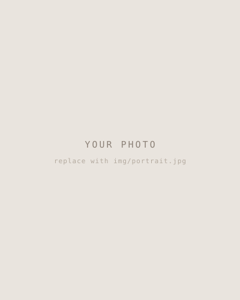

About

A paragraph on who you are and what you do now. Lead with the thing that makes you different, not with the word “passionate”.
A paragraph on how you got here — what you did before, and what made you switch. Career changers: this is your advantage, not something to hide. The retail years taught you more about difficult clients than any course did.
A paragraph on how you like to work. What you care about getting right. What a client or a team can expect from you.
What I’m looking for
The kind of role or project you want next, and when you’re free. Name the thing — junior front-end, contract, part-time, remote, wherever you are.